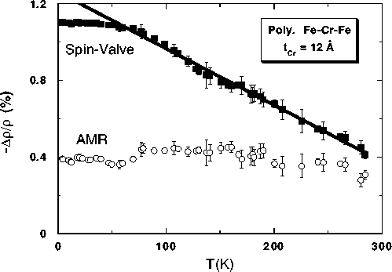

Figure 4: Temperature dependence of the two
components of the magnetoresistance for the sample of Figure 3(b). The anisotropic
magnetoresistance (AMR) is the difference between the H||I
and H perpendicular to I curves in Figure
3(b), while the spin-valve effect is their average. The
fit to the spin-valve data is given by -Dr/r(T) = 1.3% -
(2.9x10-3 %/K)×T.